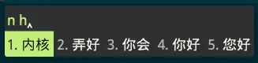

对中州韵的轻微捣鼓
Rime，中州韵
Rime，一个开源的输入法。
它的作者在官网上写道，
Rime 输入方案贵在原创。
不止于拼音、注音、仓颉、速成、五笔、双拼、宫保拼音、粤拼、吴语、中古汉语拼音、五笔画、Emoji、国际音标……
自己动手，丰衣足食。当然，懒还是可以偷的(笑)
在他的官方网站上我们可以看到一些可用的版本
他们分别是：鼠须管，小狼毫，同文，以及 Linux 版本的一些分支输入法
鼠须管–>macOS
小狼毫–>Windows
同文–>Android
他们的配置文件位置不一样，但是配置步骤相同。因为同文输入法和我们桌面平台有比较大的出入所以我们暂且不提它。
在他们的托盘图标里面就能打开他们的配置文件所在地
准备
我们需要一个文本编辑器，并且安装好 Rime，还需要下载 Rime-Pro 进行偷懒，因为我们没办法提取到那么多的词库，不如就用现成的
Rime 看自己平台下载
Rime-pro…emmm 好像只有网盘
调试
首先我们打开 Rime 的配置文件夹，把我们准备好的 Rime-Pro 给解压进去
重新部署一下 Rime，首次重新部署 Rime 需要耗费比较长的时间。完成后，不切换大小写的情况下输入一些我们常用的短语英文短语，比如:
iPad，iOS，macOS，Linux，Android，USB。
输入他们的时候都不需要专门调整大小写了，输入他们就能显示正确的结果
还有一些 emoji:
- huojian=>🚀
- chuzuche=>🚕
- siyecao=>🍀
以及一些符号:
- cmd=>⌘
- duigou=>✓
- opt=>⌥
- shift=>⇧
这个时候我们发现了一些问题：他的颜色，呃。
那么，冒险开始罢
稍作修改
另外我们需要注意，
在 Windows 下 Rime 叫做小狼毫，Weasel，配置文件应该是 weasel.custom.yaml
在 macOS 下 Rime 叫做鼠须管，Squirrel，配置文件应该是 squirrel.custom.yaml
在 Linux 下 Rime 没有特殊的名称，需要单独查阅。
也就是说假设我们是 Windows，我们需要对应的替换下文的 squirrel.custom.yaml 为 weasel.custom.yaml
在 default.custom.yaml 中我们可以修改输入法操作相关的熟悉，比如快捷键什么的
在 squirrel.custom.yaml 中我们可以修改输入法的外观什么的。(这里我用的是 macOS)
我们主要修改外观。Rime-Pro 以及 Rime 已经为我们提供了不少的主题了，所以我们设置一下即可。
我在这里选择 lost_temple，是一个我觉得很优秀的暗色主题。
如此一来我们的 squirrel.custom.yaml 中修改主题相关的就变成了这样
1 | |
由于 Rime 自带多种输入法，而有时候我们用不到那么多的输入法，于是乎就需要修改 default.custom.yaml 中与输入法相关的节点，
变成了这样
1 | |
这个时候我们在 macOS 上的 Rime 就变成了能击败百分之 99 的输入法的输入法了，他还能支持导入自己做的词库，因此我们可以把其他软件的词库扒来用用
不过需要转换啦
成果
在完成以上捣鼓后，我们需要重新部署一下 Rime。
完成后会提示的，这一次部署速度很快，然后就 OK 啦
我们的 Rime 现在长成了这样：

好了，大功告成。我们拥有了反应最快的输入法！享受打字的乐趣吧！
本博客所有文章除特别声明外，均采用 CC BY-SA 4.0 协议 ，转载请注明出处！